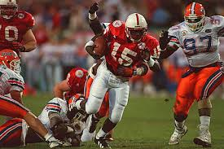

futbolas
Futbolas - Alytaus gidas

10 c Alytus Ketvirtadienis, Spalio 29d. Reklama Kontaktai Meniu Naujienos Naujienos Renginiai Skelbimai Pranešk naujieną Visos naujienos Videoreportažai Dzūkija Sportas Laisvalaikis ir kultūra 112 Politika Įdomu Verslas Aktualijos Sveikata Transportas Nuomonė Alytausgidas.lt rekomenduoja Švietimas Kulinarinis gidas Technologijos Alytausnaujienos.lt straipsniai Prisimink alytiškius Multimedija Koronavirusas Rėmėjų turinys Dzūkija Kriminalai Aktualijos Sportas Kultūra Verslas Futbolas Krepšinis Lengvoji atletika Rankinis Kitos sporto šakos Futbolas
P. De Wilde: „Jei visi dirbs, kaip FA „Dainava", Lietuvos futbolo laukia gera ateitis" (VIDEO) 11 Paskutinėse sezono rungtynėse Alytuje pergalę šventė DFK „Dainava“ (VIDEO. ĮVARČIAI) 4 Vyriausių senjorų komanda finišavo paskutinė Alytiškis E. Stočkūnas atsisveikina su Lietuvos U-21 rinktine Alytaus „Dainavai“ – dar vienų Lietuvos senjorų pirmenybių auksas 6 V. Lukšos vakarėlis: atranką į futsalo A lygą „Dainava“ pradėjo pergale, „Alytis“ pralaimėjo (VIDEO) 3 Dainaviškiai iškovojo aukso medalius 9 Dzūkijos sostinė turės dengtą, visus metus veiksiantį futbolo maniežą su keliom aikštėm 6 „Dainavos“ senjorai kausis dėl aukso „Dainavos“ senjorai pateko į Lietuvos pirmenybių finalą (VIDEOĮRAŠAS. FOTOGALERIJA) 6 Už P. Golubicko ugdymą ir žaidimą Alytuje – tūkstantinė paskata DFK „Dainavai“ 3 DFK „Dainavos“ dubleriai finišuos geriausių aštuntuke, „Vidzgiris“ pasirodymą baigė paskutinis 9 Be išvaryto L. Kochanausko žaidę dainaviškiai išplėšė tašką prieš vieną lygos lyderių (VIDEO) 5 „Dainavos“ senjorai laimėjo turnyrą Klaipėdoje Artimiausios ir paskutinės DFK „Dainavos“ sezono rungtynės Alytuje – spalį 3 Ž. Lukošiūnas: alytiškiai – tarp daugiausia futbolą žiūrinčių (ATNAUJINTA. FOTO. VIDEO) 4 Vėl laiminti DFK „Dainava“ finišuos pajėgiausių komandų grupėje (REZULTATYVIAUSI ŽAIDĖJAI) 4 „Vidzgiris“ iškovojo pirmą pergalę II lygoje Alytuje – ne tik liūtis, lijo ir įvarčiais (VIDEO. FOTO) 10 DFK „Dainavos“ vėl ėmėsi treneris užsienietis (ATNAUJINTA) 8 1:18... Alytaus futbolo derbiui artėjant – „Vidzgirio“ pažeminimas Kazlų Rūdoje 14 Dainaviškiai turnyre sėkmės istorijos nepakartojo 7 0:10... Alytaus „Vidzgiris“ pralaimėjo „Ekranui“ 10 Vartininkas „sudie“ tarė profesionaliam sportui (VIDEO. FOTO) 2 DFK „Dainava“ nenutraukė nesėkmių ruožo (VIDEO. ATNAUJINTA. INTERVIU) 28 R. Kantaravičius: Alytaus stadione visuomet pilna žiūrovų, to priežastis – vietiniai žaidėjai 24 DFK „Dainava“ neišnaudojo šanso tapti lydere 14 Dėl bilieto į pusfinalį DFK „Dainava“ kausis su A lygos komanda 2 Naujokais pasipildę dainaviškiai prasibrovė į Lietuvos futbolo taurės turnyro ketvirtfinalį 15 2020-07-11 Per vieną dieną – trijų „Dainavų“ pergalės 2020-07-08 Šviesiaplaukis jaunuolis iš Lietuvos su plačia šypsena veide grįžo į aikštę Kroatijoje 2020-07-06 Liepą – vasaros stovyklos su FA „Dainava“ 2020-07-06 Pagaliau laimėjo D. Vencevičiaus komanda 2020-07-03 Pirmas DFK „Dainava“ pralaimėjimas – „Jonavai“ 2020-07-02 Kitame taurės etape alytiškių lauks Vilniaus ekipa 2020-07-01 „Dainavos“ senjorai žais dvejose pirmenybėse 2020-06-30 DFK „Dainava” sutriuškino varžovus ir pateko į kitą Lietuvos futbolo taurės turnyro etapą 2020-06-29 Taurė: vidzgiriečiai neprilygo „Minijos“ legionieriams, dainaviškiai kovos su „Atmosfera“ 2020-06-26 „Dainavos“ senjorai pradeda sezoną 2020-06-21 II lygą Alytaus komandos pradėjo skirtingai 2020-06-20 3 turas: trečioji DFK „Dainava“ pergalė 2020-06-19 Alytiškiui vėl patikėta Suvalkų komanda 2020-06-17 Taurės žygį dzūkai pradėjo pergalėmis po baudinių: „Vidzgiris“ – Šiauliuose, „Dainava“ – prieš atgimusį „Ekraną“ Panevėžyje 2020-06-15 Alytiškis futbolininkas grįžo žaisti į Rumuniją 2020-06-14 Dainaviškiai nepasigailėjo „Žalgirio“ dublerių 2020-06-09 Kontraktą iki 2024 m. gavęs P. Golubickas po operacijos gydysis ir Lietuvoje 2020-06-07 Traumą patyrusiam Alytaus futbolo auklėtiniui – klubo ir akademijos palaikymas 2020-06-06 Sezoną DFK „Dainava“ pradėjo pergalę išplėšusi paskutinėmis minutėmis 2020-06-04 DFK „Dainava“ laukia Amerikoje, Anglijoje, Australijoje ir Ispanijoje žaidusio legionieriaus 2020-06-03 LFF taurė: DFK „Dainava“ kovas pradės pas aukštaičius, „Vidzgiris“ – pas žemaičius 2020-05-30 Paskutines kontrolines rungtynes DFK „Dainava“ baigė lygiosiomis 2020-05-29 FA „Dainava“ auklėtinis tęs karjerą Kroatijoje 2020-05-28 Lietuvos čempionams atstovaus du alytiškiai 2020-05-25 Dainaviškiai pirmą ratą Alytuje pradės su „Atmosfera“, baigs su „Džiugu“ 2020-05-21 Pirmose namų kovose DFK „Dainava“ turėtų priimti Mažeikių, Vilniaus ir Kauno komandas 2020-05-13 Alytiškius vartininkus ir kitus pajėgius žaidėjus subūrusi DFK „Dainava“ sezoną pradės birželį 2020-04-27 Ką namuose žiūri dainaviškių kapitonas? 2020-04-11 Dainaviškiai sezoną pradės trečią savaitę po karantino 2020-03-25 Į Dzūkijos sostinę turėtų grįžti „derbiai“ 2020-03-18 Apskrities pirmenybės – nutrauktos ir baigtos 2020-03-07 DFK „Dainava“ pasiekė pirmą 2020 m. pergalę 2020-03-02 „Dainavos“ senjorai laimėjo Garliavos taurę 2020-02-29 Futbolas vaikams Vilniuje arba kaip užimti atžalą laisvalaikiu 2020-02-26 Aukščiausioje lygoje žais vos 6 komandos, pirmosios lygos licencijas gavo tik tuzinas 2020-02-20 Dainaviškiams suteikta I lygos licencija 2020-02-17 Alytiškis karjerą tęs Kazachstane 2020-02-16 Valstybės dienos taurės laimėtoja – „Dainava“, tarp geriausių žaidėjų – buvę jos vartininkai 2020-02-11 Dainaviškiai siekia A lygos licencijos 2020-02-10 FA „Dainava“ talentas gali nugalėti trijose (!) Lietuvos futbolo geriausiųjų nominacijose 2020-02-07 DFK „Dainavos“ kalbintas alytiškis žais Šiaurės Airijoje 2020-02-04 Prie DFK „Dainavos“ vairo norvegą keičia treneris iš Lenkijos 2020-01-13 A lygos siekianti DFK „Dainava“ sulaukė garsių futbolo dzūkų susidomėjimo 2020-01-12 Dainaviškis karjerą tęs pasaulio vicečempionų šalyje 2020-01-08 Senjorų turnyre Alytaus „Dainava” liko antra 2019-12-29 Rezultatyviausias žaidėjas – profesionalo karjerą baigęs vartininkas Ž. Karčemarskas 2019-12-23 Kviečia Alytaus mero ir „Vyčio“ taurės turnyrai 2019-12-22 Alytaus meras: „Jei „Dainavai“ pavyktų įšokti į A lygą, naudos turėtų ir miestas“ 2019-12-21 R. Trubnikovo turnyrą laimėjo vilniečiai, kitus prizus išsidalino alytiškiai 2019-12-12 Sporto publicisto atminimo turnyre – komandos iš Alytaus, Druskininkų, Prienų, Varėnos ir Vilniaus 2019-12-01 Alytiškių atstovaujama ekipa laimėjo sidabrą 2019-11-22 Alytiškių atstovaujamos komandos baigia sezoną A lygoje, į ją norėtų ir Alytaus meras 2019-11-18 Pažadais futbolo bendruomenei nesižarstyta, spausti pūlinius – apsispręsta 2019-11-17 P. Golubickas: „Malonu, kai su tavo pavarde siejami garsių klubų vardai” 2019-11-15 Lietuvos moterų futbolo „Hummel“ lygą laimėjo alytiškės 2019-11-04 Simbolinėje sezono rinktinėje – būrys Alytaus atstovų 2019-11-01 „Dainavos“ senjorų komandos iš Gardino grįžo be pralaimėjimų 2019-10-26 Po lygiųjų Alytuje medalius iškovojo svečiai, dainaviškiai finišavo ketvirti 2019-10-26 „Dainavos“ senjorams – bronza antrąmet iš eilės 2019-10-20 Gera žinia: kelią link finišo dainaviškiai nutiesė pergale 3:0 2019-10-16 Lietuvos pergalę papuošė daugiškio meilės gestas 2019-10-15 Lietuvos minifutbolo rinktinė tęsia pergalingą debiutą pasaulio čempionate 2019-10-14 D. Matulevičius: „Grįžau arčiau šeimos“ 2019-10-13 Prie medalių dainaviškius priartino kraujo pareikalavusi pergalė 2019-10-11 Policija Alytaus futbolo fanus nubaudė finansiškai ir draudimais lankytis varžybose 2019-10-11 Lietuva debiutuoja pasaulio minifutbolo čempionate Kretos saloje 2019-10-11 3 kartas: geriausias jaunas žaidėjas – P. Golubickas 2019-10-10 Lietuvos rinktinėse – Alytaus futbolo auklėtiniai 2019-10-06 DFK „Dainava” vėl laimėjo ir grįžo į kovą dėl apdovanojimų 2019-10-02 Nauja Alytaus masinio futbolo kuratorė prisistatė trimis turnyrais 2019-09-30 Pavyzdine futbolo akademija Lietuvoje įvardinta FA „Dainava” 2019-09-28 Regiono taurę iškovoję „Dainavos“ senjorai kovą tęs dėl nacionalinių apdovanojimų 2019-09-27 I Alytuje atidaryta „popiežinė“ futbolo aikštelė 2019-09-27 G. Jarusevičius: „Kiekviena minutė – svarbi ir naudinga“ 2019-09-22 Už Lietuvą žais daugiškis, varėniškiai ir buvę dainaviškiai 2019-09-20 DFK „Dainava“ Alytuje neįkando lygos lyderiams 2019-09-07 Į Alytų grįžta moterų rinktinės 2019-09-06 Lietuvos rinktinės narys P. Golubickas: „Alytuje lankausi dažnai, kai tik yra galimybė“ 2019-09-05 Vietos futbolo sirgalius sudominę draugiškos rungtynės Alytuje nevyks 2019-08-30 Alytaus šeimos centro auklėtiniai atstovavo Lietuvai 2019-08-25 DFK „Dainava“ artėja prie lyderių trejeto 2019-08-21 Alytus pasiekė revanšą prieš Vilnių 2019-08-18 10-oji pergalė dainaviškiams leido pakilti į pajėgiausiųjų penketuką 2019-08-13 Čempionių lygos turnyrą Alytuje laimėjo albanės 2019-08-11 Kur pasuks vienas garsiausių Alytaus vartininkų? 2019-08-10 Lietuvos čempiones Alytuje galėtų išgelbėti užtikrinta pergalė prieš grupės lyderes 2019-08-09 Alytaus sporto mokyklos aikštėje – nemokama vasaros futbolo stovykla mergaitėms 2019-08-07 UEFA čempionių lyga: Lietuvos atstovės Alytuje kaunasi su ekipomis iš Airijos, Albanijos, Maltos 2019-08-06 Sporto mokyklos auklėtinis rungtyniaus Lietuvoje 2019-07-31 Rezultatyviausias DFK „Dainava“ žaidėjas: „Alytus – vienas geriausių mano sprendimų“ 2019-07-28 Po vasaros atostogų DFK „Dainava“ grįžo triuškinančia pergale 2019-07-27 Stipriausia Lietuvos komanda rengiasi UEFA čempionių lygos varžyboms Alytuje 2019-07-26 Techninis FA „Dainava“ direktorius – Belgijoje 2019-07-09 Alytiškis karjerą vėl tęs toli nuo tėvynės 2019-07-07 Dainaviškiai atostogauti – su dar viena pergale 2019-07-03 Pirmą sezono dalį DFK „Dainava“ baigė svečiuose įveikusi lyderę 2019-06-25 Europos lygos rungtynių Alytus negali priimti dėl netinkamo apšvietimo 2019-06-24 Apskrities mažojo futbolo varžybas laimėjo „Daugai“, nustebino ir „Druskininkai“ 2019-06-22 Pagrindinio stadiono veją išmėgino vaikai iš Alytaus, Kauno ir Vilniaus 2019-06-21 UEFA čempionių lyga Alytuje: Lietuvos ekipa priims varžoves iš Airijos, Albanijos ir Maltos 2019-06-21 Stadione rado perpjautus vartus 2019-06-17 Alytų turėtų vėl džiuginti Europos lygos futbolas 2019-06-15 Alytaus gimtadieniui – „Vidzgirio“ pergalė 2019-06-14 UEFA čempionių lygos kovos šią vasarą grįš į Alytų 2019-06-12 DFK „Dainava“ nutraukė nesėkmių ruožą ir iškovojo pirmąją pergalę Alytuje 2019-06-10 „Vidzgiris“ – II lygos jaunimo integracijos lyderis 2019-06-10 Tarptautinį būsimųjų pirmokų turnyrą laimėjo Alytaus FA „Dainava“ 2019-05-29 „Vidzgirio” pergalę nukalė pusę įvarčių pelnęs A. Kariniauskas 2019-05-28 Prizines I. Stumbrio atminimo turnyro vietas laimėjo rusai, marijampoliečiai ir lenkai 2019-05-24 Taurės turnyrą DFK „Dainava“ baigė Marijampolėje 2019-05-24 I. Stumbrio atminimo turnyras – jau 20-asis 2019-05-21 Vidzgiriečiai pagaliau laimėjo ir pakilo iš paskutinės vietos 2019-05-20 Namų starto „prakeiksmas“: kaip ir pernai – vėl 3 nesėkmės iš eilės 2019-05-19 Alytiškis devintokas tapo Vilniaus žalgiriečiu 2019-05-17 Pavadinimą atkūręs „Vidzgiris“ – vis dar be taškų 2019-05-16 DFK „Dainava“ patyrė dar vieną pralaimėjimą namuose 2019-05-13 Pirmos DFK „Dainava” rungtynės Alytuje: pralaimėjimas „Stumbro“ dubleriams 2019-05-09 Lygos lydere tampanti DFK „Dainava” pradeda namų rungtynių „maratoną“ 2019-05-08 16-finalyje laukia Pietų Lietuvos „derbis“ 2019-05-06 DFK „Dainava“ žais pirmas rungtynes Alytuje 2019-05-03 SRC „Vidzgirio“ sezono pradžia kol kas beviltiška 2019-05-01 Dainaviškiai į LFF taurės turnyro 16-finalį pateko, vidzgiriečiams nepavyko 2019-04-30 G. Daukšys turės naują kolegą A. Pukelį 2019-04-27 „Vidzgiris“ į didįjį futbolą grįžo nesėkme 2019-04-19 LFF taurės kovas Alytaus komandos pradės su varžovais iš Vilniaus 2019-04-15 „Dainavos“ senjorai Baltarusijoje nepralaimėjo 2019-04-11 Naujasis DFK „Dainavos“ treneris: „Rytojaus rytą dar nekovosime Europoje, bet judame teisinga kryptimi" 2019-04-08 Elitinė lyga: FA „Dainava“ neprilygo Vilniaus „Žalgiriui“ 2019-04-05 Dainaviškiai iškovojo pirmąją pergalę I lygoje 2019-04-01 I lygoje startavo Alytaus DFK „Dainava“, į II lygą grįžta FK „Vidzgiris“ 2019-03-29 FA „Dainava“ nugalėjo elitinės lygos naujokę 2019-03-21 D. Šernas: „Svajojome apie gimtąją Dzūkiją...“ 2019-03-21 Alytaus futbolo auklėtinis P. Golubickas: „Kvietimas į Lietuvos rinktinę nustebino“ 2019-03-16 Treneris iš Norvegijos prie „Dainavos“ komandų vairo debiutavo pergale 2019-03-12 Gimnazijų salės futbolo aikštelėje stipriausi – jotvingiai 2019-03-05 Alytaus senjorai – turnyro Kauno halėje prizininkai 2019-03-01 DFK „Dainava“ gavo licenciją, tačiau futbolą Alytuje matysime negreit 2019-02-18 „Dainavos“ senjorų komandos tapo turnyro Kaune prizininkėmis 2019-02-12 Naujojo DFK „Dainava“ trenerio debiutą pakrikštijo „riteriai“ 2019-02-05 Alytiškiams treneriams patikėtos Lietuvos jaunimo ir regionų rinktinės 2019-01-27 Jaunieji Alytaus futbolo talentai: vieni išvyksta į Kiprą, kiti grįžta iš Baltarusijos 2019-01-25 D. Vencevičius apie sugrįžimą: Alytus myli futbolą, bet ... dar neturi komandos ir nežino, kur žais 2019-01-10 Paskelbta pirma Alytaus DFK „Dainava“ rungtynių data 2018-12-30 Romo Trubnikovo atminimo turnyrą laimėjo Alytaus „Dainavos“ komandos 2018-12-26 Ar futbolas populiaresnis už krepšinį ... ginčytis V. Chomičius nepanoro 2018-12-19 Paaiškėjo Alytaus gimnazijų turnyro čempionai 2018-12-13 Dainaviškiai susitiko su Italijos sporto legenda 2018-12-11 Knygą „Alytaus futbolas“ skaitytojai sutiko tarptautinę futbolo dieną 2018-11-30 Alytaus sporto publicisto atminimo turnyras suvienijo senjorus 2018-11-29 Lietuvos futbolo apdovanojimuose – net keturių Alytaus „Dainavų“ pagerbimas 2018-11-22 Aukščiausio lygio futsalui tinkamą parketą Lietuvoje turi tik Alytaus arena 2018-11-17 Alytus Europos futsalo čempionų lygos egzaminą išlaikė sėkmingai 2018-11-16 Pasaulyje geriausias žaidėjas Ricardinho: „...Susitiksime Alytaus arenoje“ 2018-11-15 Elitinis salės futbolo turnyras alytiškiams padovanojo dramą 2018-11-15 Lietuvos atstovas „Vytis“ Alytuje tęsia pasirodymą tarp Europos futsalo elito 2018-11-14 UEFA salės futbolo atidarymo dieną Alytuje dominavo brazilai 2018-11-12 Prieš UEFA futsalo čempionus Alytuje žais ir „Dainavai“ atstovavę žaidėjai 2018-11-10 FA „Dainava“ baigė pergale prieš Vilniaus „Žalgirį“ ir pelnė elitinius medalius 2018-11-09 UEFA salės futbolo čempionų lygą Alytuje stebės ir Ispanijos rinktinės treneris 2018-11-08 DFK „Dainava“ neteko alytiškio stratego ir rezultatyviausio žaidėjo 2018-11-08 Sidabrą DFK „Dainavai“ iškovoti padėjęs jaunimas siekia ir elitinės lygos medalio 2018-11-03 Sezoną Alytaus DFK „Dainava“ baigė garbingu pralaimėjimu 2018-10-30 Iš Gardino „Dainavos“ senjorai grįžo su bronziniu apdovanojimu 2018-10-29 Alytiškės pelnė Lietuvos moterų futbolo „Hummel“ lygos bronzą 2018-10-28 Alytaus „Dainavai“ – Lietuvos senjorų pirmenybių bronza 2018-10-28 Mūšį dėl Alytaus vietos aukščiausioje futbolo lygoje DFK „Dainava“ pradėjo nesėkme 2018-10-26 Titas Vitukynas: „Alytaus DFK „Dainava“ privalo būti A lygoje“ 2018-10-22 UEFA čempionų lygos futsalo elito turnyras Alytuje: bilietų prekybos pradžia 2018-10-20 Fantastiškas DFK „Dainava“ finišas: prisiliesta prie aukso, pelnytas sidabras 2018-10-19 Policija prašo atsiliepti futbolo sirgalių 2018-10-17 DFK „Dainava“ pakilo į antrąją vietą - dėl aukso Alytuje kovos spalio 20 dieną 2018-10-13 Futbolo ir krepšinio rungtynėms Alytuje – neeilinis pareigūnų dėmesys 2018-10-11 „Dainavos“ futbolininkų sirgaliai palaikys „Dzūkijos“ krepšininkų varžovus 2018-10-10 Dar vienam priešininkui „pakrovusi“ DFK „Dainava“ grįžta į kovą dėl medalių 2018-10-09 UEFA salės futbolo čempionų lygos varžybos lapkritį - Alytaus arenoje 2018-10-08 Lietuvos senjorų mažojo futbolo čempionė – Alytaus „Dainava“ 2018-10-06 11 kartų iš eilės nepralaimėjusiai DFK „Dainavai” iki finišo liko tik varžybos Alytuje 2018-09-29 Dainaviškiams iki sezono finišo liko viena išvyka ir keturių rungtynių maratonas Alytuje 2018-09-27 Alytui patikėtame finale – Lietuvos didmiesčių komandų dvikova: Vilniaus „Žalgiris“ prieš Kauno „Stumbrą“ 2018-09-26 LFF taurės finalo dvikovos šeimininkui Alytui perduotas trofėjus 2018-09-25 Nepralaiminti DFK „Dainava“ – tarp lygos lyderių 2018-09-23 Alytaus FK „Rese“ futbolininkai sezoną papuošė dar viena bronza 2018-09-21 DFK „Dainava“ sutriuškinusi „Džiugą“ pradeda aukščiausių vietų medžioklę 2018-09-16 DFK „Dainava“ priešpaskutiniame LFF taurės etape neatsilaikė prieš Kauno legionierių rinktinę 2018-09-11 Lietuvos futbolo taurės laimėtojas šiemet spręsis Alytuje 2018-09-09 Alytiškis vartininkas iš Anglijos keliasi į Italiją 2018-09-06 Bilietą į finalą DFK „Dainava“ Alytuje sieks atimti iš LFF taurės savininkų 2018-09-05 „Dainavos“ senjorai įveikė „Prelegentus“ ir tapo pirmenybių lyderiais 2018-09-02 Medalių likimą „Dainavos“ senjorai spręs dvikovoje su „žvaigždžių rinktine“ 2018-09-01 Daugkartinis Lietuvos taurės laimėtojas D. Vencevičius: „Alytuje žmonės visada mėgo, mėgsta ir mėgs futbolą“ 2018-09-01 Dainaviškiams iki Lietuvos futbolo taurės finalo liko vienas žingsnis 2018-08-28 AC „Perugia“ partnere Baltijos šalyse pasirinko Alytaus FA „Dainavą“ 2018-08-17 Futbolo rungtynėse Alytaus stadione prireikė greitosios medicinos pagalbos 2018-08-14 Dainaviškiai dėl bilieto į pusfinalį kovos su lygos lyderiais 2018-08-13 Futbolininkės patvirtino Lietuvos komandoms sėkmingo Alytaus stadiono vardą - sutriuškino bulgares 2018-08-10 Lietuvos atstovės Farerų čempiones Alytuje sutriuškino 7:0 2018-08-09 Alytiškis „Vytas“ persikėlė į Vašingtono komandą, kurioje rungtyniaus su W. Rooney 2018-08-07 Lietuvos čempionių internacionalas Alytuje priima Suomijos, Farerų ir Bulgarijos futbolininkes 2018-08-05 Lietuva Alytuje iškovojo Baltijos minifutbolo nugalėtojų taurę, FK „Rese“ - bronzą 2018-08-03 Dėl Baltijos taurės Alytuje kovos Lietuvos, Latvijos, Estijos minifutbolo komandos ir rinktinės 2018-08-02 Dzūkiškas futbolas sugrįžo į Alytaus stadioną ir švenčia pergalę 2018-07-31 Europos reitinge kylančios Lietuvos čempionės Alytuje tikisi palaikymo 2018-07-29 Lemiamos sezono dalies pradžioje - dainaviškių kovos su A lygos dubleriais 2018-07-28 Alytaus sporto legenda lieka dirbti Rusijoje 2018-07-27 Alytaus futbolo festivalio uždarymo turnyre – šeimininkų, Kauno, Rygos, Šiaulių ir Vilniaus komandos 2018-07-26 Europos čempionių lygos startui Alytuje besirengiančios Lietuvos čempionės sužaidė su futbolo veteranais 2018-07-25 DFK „Dainava“ atsisveikina su brazilu, japonu ir tikisi gausinti pajėgių alytiškių futbolininkų būrį 2018-07-20 DFK „Dainava“ išmėgino afrikietį, ukrainietį ir būrį Alytaus futbolo auklėtinių 2018-07-16 Pergalingame Alytaus stadione kovos ir Lietuvos atstovės UEFA čempionių lygoje 2018-07-12 Europos lygos futbolą Alytuje trikdė rungtynes nutraukusi liūtis, Lietuvos atstovų pergalę lėmė vienas įvartis 2018-07-11 Europos lygos rungtynėse Alytaus stadione - legionieriais garsėjantys Lietuvos ir Kipro futbolo klubai 2018-07-10 Buvęs dainaviškis L. Čerkauskas: „UEFA Europos lygos rungtynes žaisti Alytuje - puiku" 2018-07-09 Kfar Sabą alytiškis žaidėjas keičia į Džizaką 2018-07-06 Lietuvos futbolo taurės savininko ir Kipro vicečempiono dvikova - Alytaus stadione 2018-07-05 Alytuje sužaidę pergalingai Lietuvos atstovai pateko į kitą UEFA Europos lygos etapą 2018-07-04 240 tūkstančių eurų laimėtojas paaiškės liepos 5-osios rungtynėse Alytaus stadione 2018-07-02 E. Stočkūnas: „Alytus laukia liepos 5-osios ir UEFA Europos lygos rungtynių” 2018-07-01 DFK „Dainava“, nugalėjusi 10:0 - tarp 8 stipriausių LFF taurės komandų 2018-06-30 Vieneriose rungtynėse - keturi T. Labuko įvarčiai 2018-06-28 Į Alytų „riteriai“ atvyksta po svarbių lygiųjų Anglijoje 2018-06-27 DFK „Dainava“ prieš lenkus išmėgino futbolininkus iš Anglijos, Gruzijos ir Alytaus 2018-06-24 Naktinio fanų turnyro nugalėtojai - alytiškiai 2018-06-21 „Eik ir žaisk!“: pasaulio čempionato metu - galimybė žaisti futbolą ir laimėti Alytuje 2018-06-20 Europos lygos varžybų sidabrą elitiniame turnyre Lenkijoje iškovojo Alytaus FA „Dainava“ 2018-06-16 Buvęs Alytaus meras spėja, kas susitiks pasaulio futbolo čempionato finale 2018-06-14 Europos futbolo lygos kovoje Alytuje lietuvių „riteriai“ priims Velso „druidus“ 2018-06-12 Su „Barcelona“ kovojusios lietuvaitės šią vasarą rungtyniaus Alytuje 2018-06-10 Trečias kartas namų stadione laimėti DFK „Dainavai“ nepadėjo 2018-06-07 Užsienyje karjerą tęsiantis futbolininkas iš Alytaus liko be klubo 2018-06-05 Europos čempionatą Alytuje, Marijampolėje ir Šiauliuose UEFA įvertino puikiai 2018-06-03 Dzūkų ir aukštaičių futbolo dvikovoje šeimininkai liko 9-iese 2018-06-01 Antrasis dzūkų egzaminas pagrindinėje Alytaus aikštėje - su aukštaičiais 2018-05-28 Jaunasis Alytaus futbolo dinastijos atstovas sudomino Italijos klubą 2018-05-27 Alytuje susitiko bendraamžiai iš Lietuvos, Latvijos, Baltarusijos ir Rusijos 2018-05-25 Irmantui Stumbriui atminti Alytuje - 19-sis tarptautinis turnyras 2018-05-24 DFK „Dainavos“ grįžimas į Alytaus stadioną sutapo su pirma nesėkme (VIDEOĮRAŠAS. NUOTRAUKOS) 2018-05-23 DFK „Dainavos“ futbolininkai keliasi į pagrindinę Alytaus miesto aikštę, sirgaliai - į vieną tribūną 2018-05-21 Alytuje iškovotu bilietu į pasaulio čempionatą Urugvajuje džiaugėsi Suomija (ATNAUJINTA) 2018-05-18 Anglija ar Vokietija? Ką palaikyti UEFA EURO WU17 pusfinalyje Alytaus stadione 2018-05-18 Nepralaiminti DFK „Dainava“ rungtyniaus pagrindiniame Alytaus stadione 2018-05-15 „Pradinukų lygą“ Pietų Lietuvoje laimėjo Alytaus „Volungiukai“ 2018-05-15 Lietuva Alytaus stadione mėgino priešintis Europos čempionei Vokietijai (ATNAUJINTA. NUOTRAUKOS) 2018-05-15 Alytaus miesto stadione – Europos čempionių iššūkis lietuvėms 2018-05-14 „Žalgirio“ žaidynių nugalėtojai - Alytaus futbolininkai ir tinklininkai, medalius iškovojo ir krepšinio atstovai 2018-05-13 Į „Alytaus“ komandą susibūrę pasaulio alytiškiai iš Ispanijos grįžo su bronza 2018-05-12 Komandos Europos čempionato dalyvės džiaugiasi Alytaus stadionu ir žiūrovais 2018-05-11 DFK „Dainava“ tęsia sezoną be pralaimėjimų 2018-05-10 „Dainavos“ futbolo sirgaliams uždrausta patekti į stadionus 2018-05-09 UEFA Europos čempionato finaliniame etape - net 6 rungtynės Alytuje (ATNAUJINTA) 2018-05-07 „Dainavos“ futbolininką saugas iš Japonijos saugojo ir dantimis (VIDEO) 2018-05-05 Europos merginų futbolo čempionatą Lietuva pradės Alytuje su Olandija 2018-04-25 Naujoji 50-mečių „Dainava“ sezoną pradės gegužę 2018-04-21 DFK „Dainava“ tapo vienvalde pirmenybių lydere 2018-04-20 LFF taurės pirmame etape – dzūkiška futbolo akistata 2018-04-17 Trečioji pergalė DFK „Dainavai“ leido pakilti į 2 vietą 2018-04-17 Europos čempionato kvieslė Lapė Snapė pratinasi prie Alytaus stadionų 2018-04-14 „Dzūkų tankai“ Lietuvos futbolo federaciją „pagerbė“ tylos minute 2018-04-13 Europos futbolo čempionate Alytuje Lietuva kovos su daugkartine nugalėtoja Vokietija ir Olandija 2018-04-03 Alytaus futbolo mėgėjų komandos rungtyniaus ne viename čempionate 2018-03-29 Nauja alytiškio futbolininko karjeros stotelė – Suomijos vicečempionų komanda 2018-03-25 „Putinų taurę“ laimėjo turnyro šeimininkai 2018-03-23 Lenkijoje viešėjusi DFK „Dainava“ pasipriešino Suvalkų „Wigry“ komandai (NUOTRAUKOS) 2018-03-21 Sezoną pradedančioje DFK „Dainavoje“ - futbolininkai iš Lietuvos ir dar 7 šalių (SĄRAŠAS) 2018-03-19 Oksanos Paplauskienės auklėtinėms - Lietuvos merginų U-17 futbolo čempionato sidabras 2018-03-12 Europos merginų futbolo čempionato finalo kovos vyks ir Alytaus stadione 2018-03-03 Pirmosios DFK „Dainava“ priešsezonio lygiosios - su „Banga“ 2018-03-02 Dzūkijos futbolo klubas „Dainava“ susitiks su „Banga“ ir „Nevėžiu“ 2018-02-23 Licencijos siekianti DFK „Dainava“ planuoja turėti ekipas I ir II lygoje 2018-02-22 DFK „Dainava“ pasiekė pirmąją pergalę, o kitas rungtynes atšaukė dėl šalčių 2018-02-15 DFK „Dainava“ įvardijo tikslą patekti į A lygą ir kurti klubinę Alytaus futbolo struktūrą 2018-02-11 Apskrities salės futbolo taurių laimėtojos – Alytaus „Rese“ ir USA Kopijuoti, dauginti bei platinti galima tik gavus raštišką MB Alytausgidas.lt sutikimą.MB Alytausgidas.lt
Įm. k.: 302935422
+370 616 74933
[email protected]
Populiarūs straipsniai
Oro užterštumas Alytaus mieste ir apylinkėse Skaityti plačiau Alytiškių sukurta peticija dėl VRM ministrės atsistatydinimo sulaukia vis daugiau palaikymo Skaityti plačiauMes facebook'e
Alytausgidas.lt Dovanos Dzūkijoje Dzūkijos skelbimai Lauko reklama Alytuje Automobilių nuoma Alytuje KET bilietai Darbas Alytuje adidas batai Kosmetika © MB Alytausgidas.lt. Visos teisės saugomos. | Privatumo politika Sprendimas: CWEB.lt Sutinku Siekdami pagerinti Jūsų naršymo kokybę, statistiniais ir rinkodaros tikslais šioje svetainėje naudojame slapukus (angl. "cookies"), kuriuos galite bet kada atšaukti pakeisdami savo interneto naršyklės nustatymus ir ištrindami įrašytus slapukus. PlačiauPosted by Jack  Read more
Read more  Comments (15)
Comments (15)  2020.10.29 06:22
2020.10.29 06:22